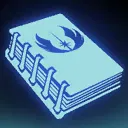

Inflict Buff Immunity on target enemy for 2 turns and deal Special damage to them. Luke gains 2% Max Health (stacking, max 20%) until the end of encounter. This attack will critically hit if able and can't be countered.
Inflict Tenacity Down on target enemy for 2 turns, then Daze them for 2 turns. Increase their cooldowns by 1.
Raid Bosses: Inflict Tenacity Down on target enemy for 2 turns, then inflict 3 Expose for 2 turns on them.
Call target other Light Side ally to assist, then grant them and Jedi Master Luke Skywalker Advantage and Critical Damage Up for 2 turns.
If target other ally is a Jedi, that ally gains Jedi Lessons for 3 turns, which can't be copied. If they already have Jedi Lessons, the duration for all current stacks on them resets to 3 turns (max 3 stacks).
This ability can't be resisted or evaded.
Jedi Lessons: +20% Mastery per stack
Deal Special damage to all enemies. Then, remove 20% Turn Meter from them and inflict Ability Block and Breach for 2 turns. Deal 10% more damage and remove an additional 5% Turn Meter for each ally with Jedi Lessons or Jedi Legacy.
All Jedi allies gain 15% Turn Meter and Critical Hit Immunity for 1 turn.

All Light Side allies have +10% Max Health and Max Protection, doubled for Jedi allies. All Jedi allies have +30% Offense and +40 Speed.
If all allies are Jedi at the start of battle, Jedi Master Luke Skywalker Taunts while he has Protection.
The first time each other Jedi ally falls below 100% Health, they dispel all debuffs on themselves and gain Critical Hit Immunity, Defense Up, and Tenacity Up for 2 turns. Then, Luke Taunts for 2 turns, which can't be copied, dispelled, or prevented.
At the start of battle, Jedi allies gain the granted ability Inherited Teachings.
Inherited Teachings: Gain Jedi Lessons for 3 turns and call target other Light Side ally to assist, dealing 90% less damage. Then, they deal true damage to the target enemy based on 60% of Jedi Master Luke Skywalker's base Max Protection, which can't be evaded.
If that ally is a Jedi, they gain Jedi Lessons for 3 turns and 15% Turn Meter, recover Protection equal to 5% of Luke's base Max Protection, and reduce the cooldown of their Inherited Teachings ability by 1.
This ability can't be used if there are no other Jedi allies. (Cooldown: 2)
Jedi allies may gain Jedi Lessons.
The first time each other Light Side ally falls below 100% Health, they recover 25% Health and Protection, doubled for Jedi allies.
At the start of battle, Jedi Master Luke Skywalker gains Jedi Legacy until the end of battle, which can't be copied, dispelled, or prevented.
Jedi Legacy: +100% Mastery and ignores Taunt during their turn; can't gain Jedi Lessons
This unit takes reduced damage from percent Health damage effects and massive damage effects. They take massive damage from destroy effects (excludes raid bosses) and are immune to stun effects.
This unit has +10% Max Health and Max Protection per Relic Amplifier level, and damage they receive is decreased by 30%.